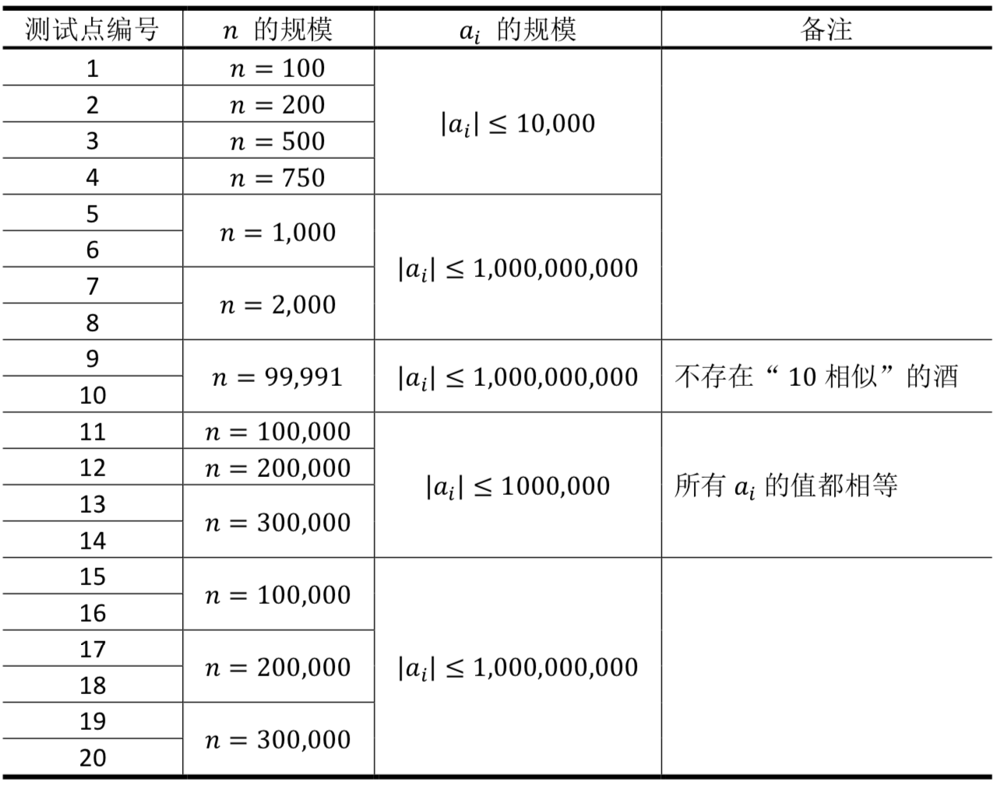

【样例说明1】
用二元组$(𝑝, 𝑞)$表示第$𝑝$杯酒与第$𝑞$杯酒。
0相似：所有45对二元组都是0相似的，美味度最大的是8 × 7 = 56。
1相似：(1,8) (2,4) (2,9) (4,9) (5,6) (5,7) (5,10) (6,7) (6,10) (7,10)，最大的8 × 7 = 56。
2相似：(1,8) (4,9) (5,6)，最大的4 × 8 = 32。没有3,4,5, ⋯ ,9相似的两杯酒，故均输出0。
【数据规模与约定】
所有测试数据的范围和特点如下表所示

 Comet OJ
Comet OJ